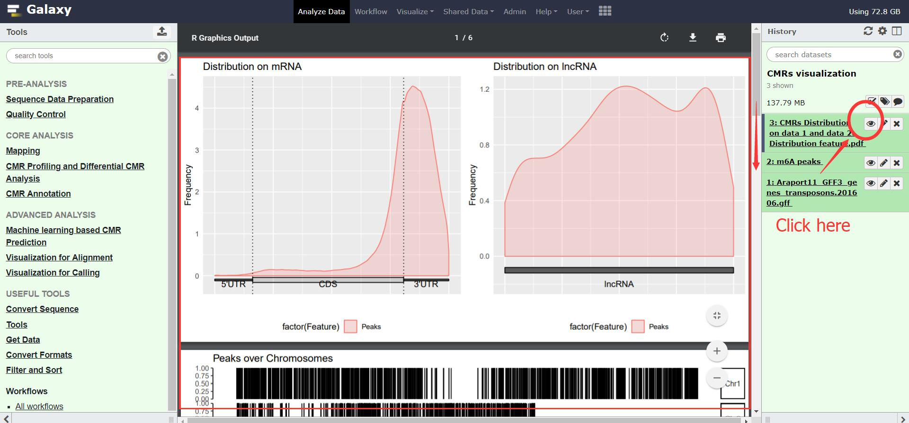
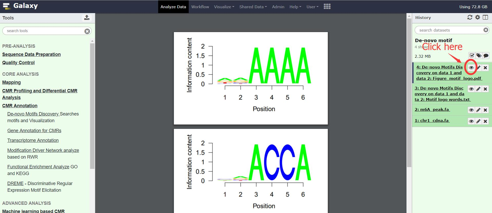

Step-by-step protocols¶
This section should give you an overview of how to do many common tasks. We’re using screenshots from Galaxy here.
Note
Do let us know if you spot things that are missing or should be explained better! Just send an email to q2516581@126.com
The tool is still in beta, there may be unstable connections or other conditions, and generally waiting and refreshing may solve such problems. We will continue to optimize server performance.
Tip
We provide a lot of sample data, please focus on the first section.
How to do…?
- PRE-ANALYSIS
- How do I import the data provided by the server, and how do I verify that my input/output is the same as the sample data ?
- I have downloaded/received a sra/bam/fa/txt… file - How to upload local data ?
- How to download and extract data from Short Reads Achive (SRA database) ?
- How to perform raw sequence quality control, filtering ?
- CORE ANALYSIS
- How to perform sequence alignment ?
- How to obtain the identify CMRs?
- How CMRs visualization to examine their distribution ?
- I have a known motif, how to check the distribution of this motif in a set of data ?
- How to perform de-novo motifs discovery analysis?
- How to get a quantified level of modification ?
- I have multiple duplicate samples and stress experiments, how to get a differential modification information ?
- How to annotate the CMRs region?
- How to predict modification driven genes and associated networks ?
- How to perform functional enrichment analyze for CMR related gene?
- Advanced ANALYSIS
PRE-ANALYSIS¶
How do I import the data provided by the server, and how do I verify that my input/output is the same as the sample data ?¶
- Click the Share Data → Data Libraries in the top bar.
- Find and select the dataset you want to use, whatever in ‘Genome and annotation data’ or ‘Step-by-step protocols’.[Please check]
- Click the To history → as Datasets , then Click Import to import data into History bar.
Tip
Here we provide a partially downloaded reference genome and annotation file, as well as parts of example output/input file for the functions.
I have downloaded/received a sra/bam/fa/txt… file - How to upload local data ?¶
- Click Get Data in the homepage (see figure below) to upload files.
- And then you will see the following interface:
- Next, Click the button Choose local file and select a file you would like to upload , you will see the following interface:
- Then click Start to upload file.
How to download and extract data from Short Reads Achive (SRA database) ?¶
- Click the Sequence Data Preparation and select tool Download Sequence or Annotation File.
- Input:
- Accession: A single SRA accession ID (start with SRR, DRR or ERR).
- Output
- The compressed sequencing datasets with SRA format.
- Submit the task and wait for the task to complete
- Click the Sequence Data Preparation and select tool Extract Sequence Dataset.
- Input:
- Input sra file: The sequence data (SRA format) (the output from Download Sequence or Annotation File).
- Output
- Fastq format file.
- Submit the task and wait for the task to complete.
How to perform raw sequence quality control, filtering ?¶
- Upload data or add Filter and quality control dataset in Data Libraries to history
- Click the Quality Control and select tool Quality and Trimmer of Reads.
- Input:
- Input 1: Single-end or Paired-end FASTQ or FASTQ.GZ reads.
- Output
- Quality and Trimmer of Reads
- HTML report
CORE ANALYSIS¶
How to perform sequence alignment ?¶
- Upload data or add Maping dataset in Data Libraries to history
- Click the Mapping and select tool HISAT2.
- Input:
- Reference genome.: Select a reference genome.
- FASTA/Q file: Single-end or Paired-end FASTQ or FASTQ.GZ reads.
- Output
- Aligned read (BAM format)
- Waiting for a moment. (About ten minutes)
How to obtain the identify CMRs?¶
The MeRIP-seq data¶
- Upload data or add CMR Calling from the MeRIP-seq data in Data Libraries to history
- Click the CMR Profiling and Differential CMR Analysis and select tool Peak calling.
- Input:
- Input sample: The input control experiment in BAM format.
- RIP sample: The RIP experiment in BAM format.
- Reference genome: The Reference genome sequences with FASTA format.
- Reference annotation file: The Reference genome annotation file with GTF/GFF3 format.
- Output
- The enriched peak region matrix in BED format.
The RNA-BSseq data¶
- Upload data or add CMR Calling from the RNA-BSseq data in Data Libraries to history
- Click the CMR Profiling and Differential CMR Analysis and select tool Calling m5C.
- Input:
- FASTQ file: The FASTQ format sequencing file.
- Reference genome: The reference genome sequences in FASTA format.
- Reference annotation file (GTF): The reference annotation file in GTF format.
- Output
- The m5C sites in BED format.
The Pseudo-seq data¶
- Upload data or add CMR Calling from the Pseudo-seq data in Data Libraries to history
Tip
This section provides examples of the set of data results in data. Due to the long calculation time, please log in and run to prevent the project from being automatically cleaned up.
- Click the CMR Profiling and Differential CMR Analysis and select tool Calling pseudoU.
- Input:
- Read BAM files: The input control experiment in BAM format.
- Reference genome: The Reference genome sequences with FASTA format.
- Output
- A list containing the position and ratio for each pseudouridine.
How CMRs visualization to examine their distribution ?¶
- Upload data or add CMRs visualization in Data Libraries to history
Tip
This section provides examples of the set of data results in data. Due to the long calculation time, please log in and run to prevent the project from being automatically cleaned up.
- Click the Visualization for Calling and select tool CMRs Distribution.
- Input:
- CMR region : The CMR data must be in a tabular file (as bed) with at least 3 columns of data for each CMR (one CMR per line).
- Reference GFF : The annotion file requires the standard gff/gff3 format, recommended download from ensemble plant database.
- Output
- CMRs distributions at different levels including chromosome, gene, RNA feature and transcript level.(PDF format)
The distributions plot should look like this:
I have a known motif, how to check the distribution of this motif in a set of data ?¶
- Upload data or add Known motif in Data Libraries to history
- Click the Convert Sequence and select tool Extract Sequence.
- Input:
- CMR region : The CMR data must be in a tabular file (as bed) with at least 3 columns of data for each CMR (one CMR per line).
- Reference genome: Reference genome used in alignment.
- Output
- Sequence: Generated motif sequence.

- Click the Visualization for Calling and select tool Sequence Visualization.
- Input:
- The plot sequence: Visualization sequence to be analyzed
- The background sequence: Input sequence when performing two sets of sequence difference composition analysis.(Fill in the same sequence without reference in this example)
- Output
- Known motif logo.(PDF format)

The Known motif logo plot should look like this:

How to perform de-novo motifs discovery analysis?¶
- Upload data or add De-novo motifs discovery in Data Libraries to history
- Click the CMR Annotation and select tool De-novo Motifs Discovery.
- Input:
- CMR region : A tab seperated matrix
- Reference GFF : The annotion file requires the standard gff/gff3 format, recommended download from ensemble plant database.
- Output
- CMRs distributions at different levels including chromosome, gene, RNA feature and transcript level.(PDF format)
The distributions plot should look like this:
How to get a quantified level of modification ?¶
- Upload data or add Quantification in Data Libraries to history
- Click the CMR Profiling and Differential CMR Analysis and select tool Quantify Measure.
- Input:
- Input sample: The input control experiment in BAM format.
- RIP sample: The RIP experiment in BAM format.
- Peaks: The peak regions in BED format.
- Output
- A tab seperated matrix containing eight columns ( “MFPKM_FC” “MFPKM_ip” “Reads_ip” “MFPKM_input” “Reads_input “Reads_FC” “log10.p” “log10.fdr”)

I have multiple duplicate samples and stress experiments, how to get a differential modification information ?¶
- Upload data or add Multi-experiment in Data Libraries to history
Tip
This section provides examples of the set of data results in data. Due to the long calculation time, please log in and run to prevent the project from being automatically cleaned up.
- Click the CMR Profiling and Differential CMR Analysis and select tool Differential CMRs analysis.
- Input (Four group):
- Name: The experiment name.
- Replicate: The replicate name.
- Peak files: The peak regions in BED format.
- RIP BAM files: The RIP experiment in BAM format.
- Input BAM files: The input control experiment in BAM format.
- Output
- a table of differentially CMRs in Interval, BED format
- a PDF of plots (Heatmap, PCA, Boxplots)
- an RData file of the R objects generated
- a text file with information on the analysis (number of Intervals, FriP scores, method used)

The plot should look like this:

The differentially CMRs table should look like this:

How to annotate the CMRs region?¶
- Upload data or add Annotation in Data Libraries to history
- Click the CMR Annotation and select tool Gene Annotation for CMRs.
- Input:
- CMR region : The CMR data must be in a tabular file (as bed) with at least 3 columns of data for each CMR
- Reference GFF : The annotion file requires the standard gff/gff3 format, recommended download from ensemble plant database.
- Output
- Gene annotation table

- Click the CMR Annotation and select tool Transcriptome Annotation.
- Input:
- CMR region : The CMR data must be in a tabular file (as bed) with at least 3 columns of data for each CMR
- Reference GFF : The annotion file requires the standard gff/gff3 format, recommended download from ensemble plant database.
- Output
- Transcriptome annotation table

How to predict modification driven genes and associated networks ?¶
- Upload data or add Annotation in Data Libraries to history
- Click the CMR Annotation and select tool Modification Driver Network analyze.
- Input:
- Gene-Gene/Protein-Protein interaction network : Species name to be analyzed
- Gene list : List of genes to be analyzed, only the first column wiil be analyzed.
- Output
- Modification driver gene list
- Modification driver Network (PDF format)

The Modification driver Network should look like this:

How to perform functional enrichment analyze for CMR related gene?¶
- Upload data or add Functional Enrichment Analyze in Data Libraries to history
- Click the CMR Annotation and select tool Modification Driver Network analyze.
- Input:
- The species name : Species name to be analyzed
- The modification gene list : List of genes to be analyzed, only the first column wiil be analyzed.
- The type of gene names coding (Orgdb support) : Type of gene name，support : TAIR, ENTREZID, ENSEMBL, GO
- Output
- Table_GO - Q-value ascending GO terms.
- Table_Kegg - Q-value ascending GO terms.
- Figure_GO - Bar plot and Dot plot and Enrichment Map
- Figure_GO_level - Equal level of GO enrichment

The Figure_GO should look like this:

Advanced ANALYSIS¶
I have interval information for CMRs, how to get his precise position ?¶
- Upload data or add Precisely localize CMRs in Data Libraries to history
Tip
This section provides examples of the set of data results in data. Due to the long calculation time, please log in and run to prevent the project from being automatically cleaned up.
- Click the Machine learning based CMR Prediction and select tool Precisely localize CMRs from peaks.
- Input:
- Peak region: The positive bags in BED format generated by peak calling.
- Reference genome: The reference genome sequence in FASTA format.
- Reference annotation file (GTF): The reference annotation file in GTF format.
- Motif: A string specified the motif.
- Output
- Model.data: The trained MIL-based model.
- Normalized_parameter.data: The normalized parameters used in model training.
- Prediction_score.txt: The predictive probabilistic score for each instance in bags.
- Reserved_samples.txt: CMRs in single nucleotide resolution.

How to predict potential CMRs in the whole transcribed region ?¶
- Upload data or add CMRs prediction in Data Libraries to history
Tip
This section provides examples of the set of data results in data. Due to the long calculation time, please log in and run to prevent the project from being automatically cleaned up.
- Click the Machine learning based CMR Prediction and select tool CMR prediction.
- Input:
- Reference genome: The reference genome sequence in FASTA format.
- Reference annotation file (GTF): The reference annotation file in GTF format.
- Model: The MIL-based model generated by module Machine learning based CMR Prediction.
- The normalized parameter file: The normalized parameters generated by module Machine learning based CMR Prediction.
- Motif: A string specified the motif.
- Output
- Predicted CMR.txt: The predicted CMRs.